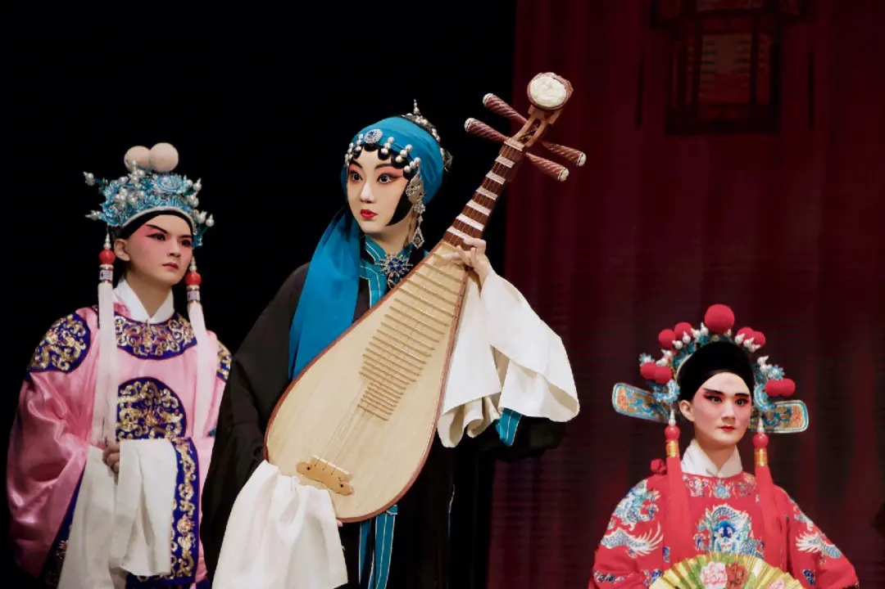
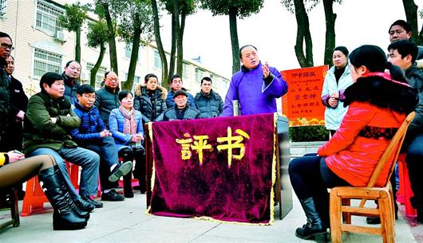
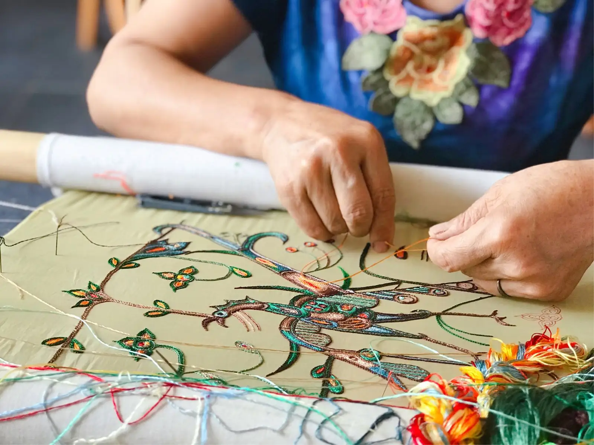

Explore Wuhan Culture
Han Opera
Han Opera, formerly known as Han Tune or Chu Tune(Chu Opera), commonly known as "Er Huang", refers to the local drama in Wuhan, Hubei Province. It is one of the traditional Han Chinese opera genres and one of the national intangible cultural heritage. Han Opera, formed in Hubei during the mid Qing Dynasty, was named Han Opera during the Republic of China period. Han Opera is mainly circulated in Hubei Province, as far as parts of Hunan, Henan, Sichuan, Shaanxi, Hunan, Guangdong, Anhui, Jiangxi, Fujian, Guizhou, Jin and other provinces. There are over 660 traditional repertoire of Han Opera, with beautiful singing, elegant dialogue, atmospheric texts, and high requirements for the cultural quality of actors. The characters are divided into ten lines, and in addition to Xipi and Erhuang tunes, Luoluo tunes are also used more frequently. Accompanying instruments include Hu Qin, Yue Qin, San Xian, Gu Ban, etc.
Hubei storytelling
Hubei storytelling in Hubei dialect is a popular form of folk art in the Hubei region. Hubei Pingshu is performed by one person, who only speaks but not sings, using a piece of wood as a prop. At every critical moment in the plot, a strong blow to the wood awakens the audience and inspires them. Representative songs include "Wang Mang's Loyalty and Filial Piety", "Eight Gates of Wisdom", "Mang Seed Feeding the Horse", "Listing for Marriage", and so on.
Han embroidery
Han embroidery, a traditional folk art in Hubei Province, is one of the national intangible cultural heritages. Han embroidery is a traditional embroidery art popular in the Jingsha, Wuhan, and Honghu areas of Hubei Province. According to historical records, it originated in the Han Dynasty, flourished in the Tang Dynasty, and flourished in the Qing Dynasty. As the land of ancient Chu, the unique geographical environment of Wuhan provides cultural soil for the development of Han embroidery. The embroidery embankments in Xiulin Town, Shishou City, Fengkou Town, Honghu City, and the embroidery streets in Hankou are all named after the concentration of embroidery. Han embroidery has bold ideas, vivid colors, full and decorative visuals, and exudes Chu style charm everywhere.